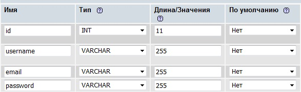
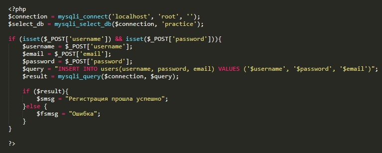

В чем заключается смысл регистрации? Здесь ничего сложного, просто нам надо в базе данных занести строку в таблицу users с данными пользователя: login, email и password
Начнем с создания базы. Для этого открываем phpmyadmin, заходим в раздел базы данных, в поле ввода "создать базу данных" вводим имя нашей базы и жмем создать. Имя базы у нас будет practice. После создания базы, надо создать таблицу. Таблицу называем user и указываем что она должна содержать четыре поля.
Тип данных полей и длину надо указать как на картинке
Так же для поля id надо указать index - primary и поставить галочку A_I (автоинкремент). Для поля username в поле index указываем unique (уникальный)
C базой мы закончили теперь приступим к коду. Для начала рассмотрим код html
Итак здесь у нас бдок div с классом container, этот блок и будет контейнером для нашей формы регистрации. В этом блок у нас заголовок, далее две строки содержащие php код (о нём чуть позже). Затем три input с типом текст и один input с типом submit. что бы придать этому всему более менее нормальный вид, отстилизуем нашу форму
Теперь приступим к коду php
В первой строке мы создаем переменную которой присвоится результат функции mysqli_connect. эта функция создает соединение. У функции существует три входных параметра:
Далее мы объявляем кторую переменную (select_db) которой присваиваем результат функции mysqli_select_db. по названию функции можно догадаться что эта функция устанавливает соединение с указанной базой. У функции два входных параметра: нам надо указать подключение к серверу (которое мы записали в предыдущей переменной) и имя самой базы данных (в нашем случае база - practice).
Далее идет оператор ifон проверяет два условия с помощью метода isset, проверяет на наличие элементов username и password ассоциативного массива $_POST. Если условие выполняется то объявляются переменные которым присваиваются значения элементов массива с индексами совпадающих с названиями переменных. После чего объявляется переменнаяв которую помещается текст SQL запроса на добавление записи в таблицу. Ну и наконец мы объявляем переменную $result в которую помещается результат функции mysqli_query. У функции два входных параметра: первый - это переменная соединения с сервером БД (наша переменная $connection) и SQL запрос, который мы поместили в переменную $query. Эта переменная $result может принимать булевое значение (SQL сработал - true, не сработал false), именно это мы используем в следующем операторе if
Если $result получил значение true, то мы объявляем переменную $smsg в котороую помещаем текст сообщения о том, что регистрация прошла успешно, если же $result получил значение false, то мы объявляем переменную $fsmsg и помещаем в нее текст "Ошибка".
Ну и теперь вернемся к двум сточкам в начала html кода
Первая строчка говорит о том, что если существует переменная $smsg то создается блок div в котором при помощи оператора echo выводится текст переменной
Во второй строчке говорится если переменная $fsmsg существует то так же создается блок div в который помещатся текст переменной $fsmsg